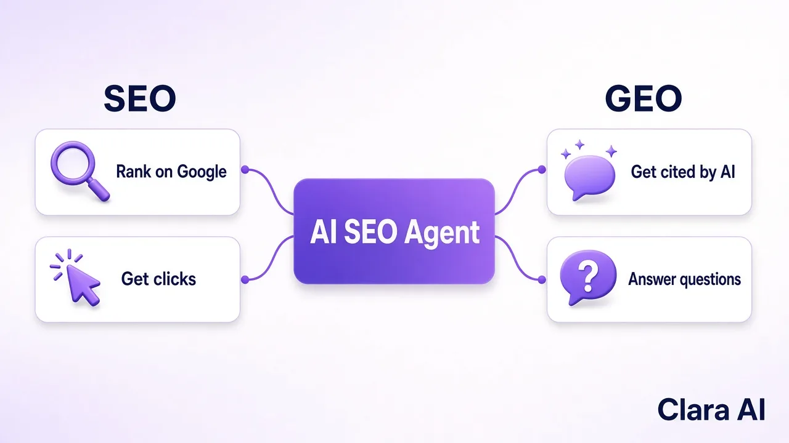

An AI SEO agent is software that does the daily work of SEO for you. It finds the questions your buyers type into Google and AI tools like ChatGPT, writes clear answers, publishes them on your website, asks Google to index them and tracks which pages bring visitors and leads. You set the direction once; it runs every day.
We run one on our own site first. claraai.tech grew organic sessions by +28% from 10–25 Oct vs 24 Sep–9 Oct 2026, with a new post published every day by the agent. The same daily discipline powers our LinkedIn agent: for Haique Surfaces, as of 21 Oct 2026, it reached 345 prospects, 107 accepted (31%) and 14 replied.
Think of the work a good in-house SEO person does in a week. An AI SEO agent does the same steps, on a schedule, without waiting for someone to find the time:
The point is not that a machine writes faster. The point is that the work happens every single day. Most B2B websites fail at SEO not because the team doesn't know what to do, but because nobody owns it after the website launch.
Buyers now search in two places. They still use Google, and more and more of them also ask ChatGPT, Gemini, Perplexity or Google's AI Overviews to shortlist vendors. A modern AI SEO agent works for both.

| SEO | GEO (AI search) | |
|---|---|---|
| Goal | Rank on Google and get the click | Get named or cited in an AI answer |
| Where buyers see you | Search results page | ChatGPT, Gemini, Perplexity, AI Overviews |
| What helps | Buyer keywords, clear pages, internal links, indexing | Direct answers, clear structure, topic depth, pages that already rank |
| How you measure it | Search Console clicks, impressions, rankings | Checking a fixed list of buyer questions in AI tools |
The two are linked. Google explains in its guide to AI features and your website that the same SEO basics apply to AI Overviews, and AI assistants tend to cite pages that already rank well. So good SEO is the foundation of AI visibility, and an agent that publishes clear, question-led pages helps with both at once.
| AI writing tool | SEO agency | AI SEO agent | |
|---|---|---|---|
| Who does the work | You, with a draft from the tool | A team, on their schedule | The agent, every day |
| Publishing and indexing | Manual | Usually, with delays | Built into the daily loop |
| Reporting | None | Monthly report | Weekly numbers on clicks, rankings and leads |
| Best for | Teams with a writer who has time | Large budgets and long contracts | B2B teams that want steady output without hiring |
An agent works like a person on your team who lives in the browser: it opens your site, does the work and reports back to you on WhatsApp. That is why we think many companies will come to AI agencies for this kind of office work instead of hiring for it. We cover this in more detail in AI SEO agent for B2B companies.
It fits best when three things are true: you sell to other businesses, each customer is worth a lot, and your buyers search before they call. That covers manufacturers, distributors, software firms, consultancies, real estate developers and B2B service companies. If your website shows up for your own brand name but not for the problems you solve, an agent is built for exactly that gap.
If you are in India or sell into India, our guide to SEO for B2B companies in India shows how this works for local buyers.
SEO is a long game, and anyone who promises page one next week is guessing. Google's own SEO starter guide says changes can take from several hours to several months to show. A realistic plan looks like this:
On our own site, the early signal came fast: +28% organic sessions in the first sixteen days we compared. You can read the full story in our AI SEO agent case study.
Our AI SEO Agent starts with a short call about your business, your buyers and the pages that matter most. We agree the topics, facts and tone once, then the agent runs daily and sends you a simple weekly update. You can pair it with our AI LinkedIn Outreach Agent, so the same buyers who find you on Google also hear from you on LinkedIn. If you need something different, we also build custom AI agents.
Clara AI is a team of 14 that builds AI agents for 19 businesses. Tell us what you sell and who you want to reach, and we aim to show you a first demo within 7 days.